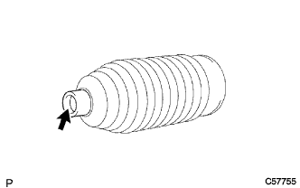
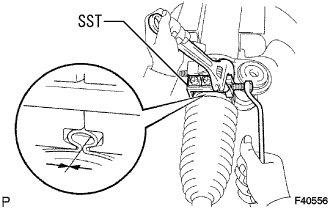
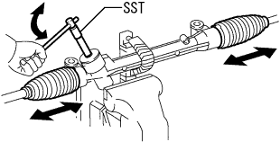

Steering Gear Assembly Reassembly |
| 1. Install Steering Rack Boot NO.2 |
 |
Apply Toyota genuine rubber grease to the inside of the small diameter end of steering rack boot No.2.
Install steering rack boot No.2 to the groove of the rack housing.
| 2. Install Steering Rack Boot NO.1 |
| 3. Install Steering Rack Boot Clamp NO.2 |
Install a new steering rack boot clamp No.2 to steering rack boot No.2.
 |
Press SST against the rack housing side and stake steering rack boot clamp No.2 so that the clearance is within the standard.
| 4. Install Steering Rack Boot Clamp NO.1 |
| 5. Install Steering Rack Boot Clip (LH Side Installation Position) |
Using pliers, install the steering rack boot clip to steering rack boot No.2.
| 6. Install Steering Rack Boot Clip (RH Side Installation Position) |
| 7. Steering Gear Assembly Inspection |
 |
Using SST, turn the pinion shaft and check that the left and right steering rack boots extend and retract smoothly.
| 8. Install Tie Rod End Sub-assembly LH |
 |
Install the lock nut and tie rod end sub-assembly LH up to the matchmarks, and temporarily tighten the lock nut.
| 9. Install Tie Rod End Sub-assembly RH |